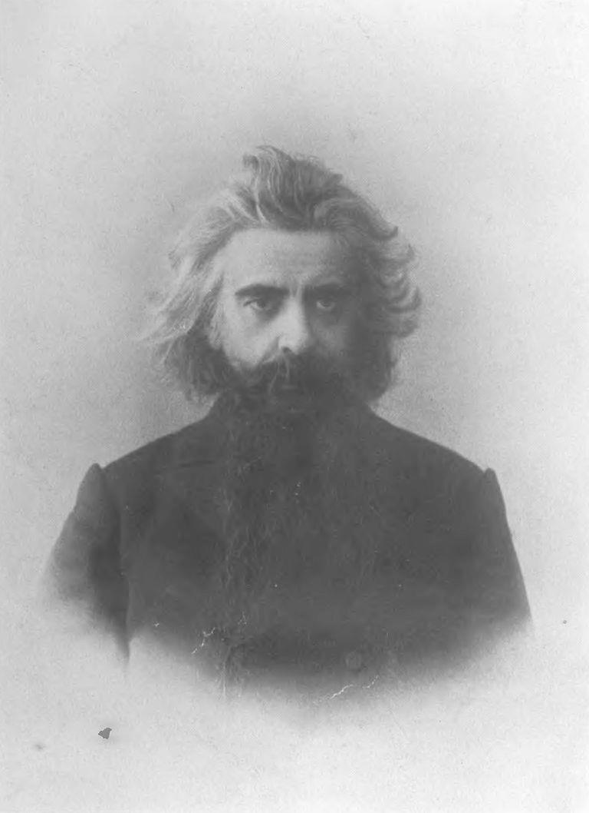
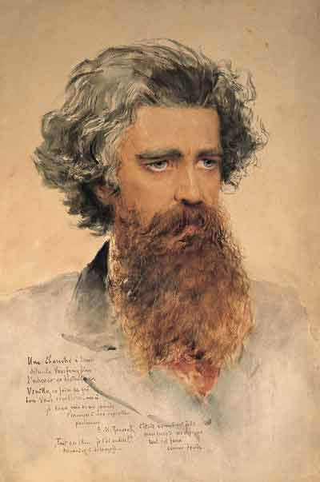
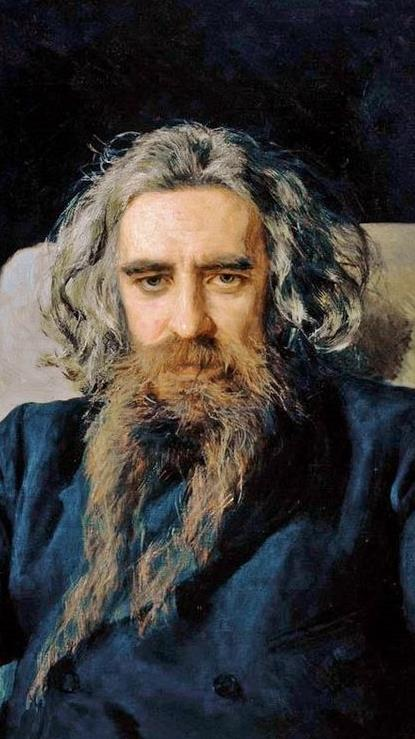
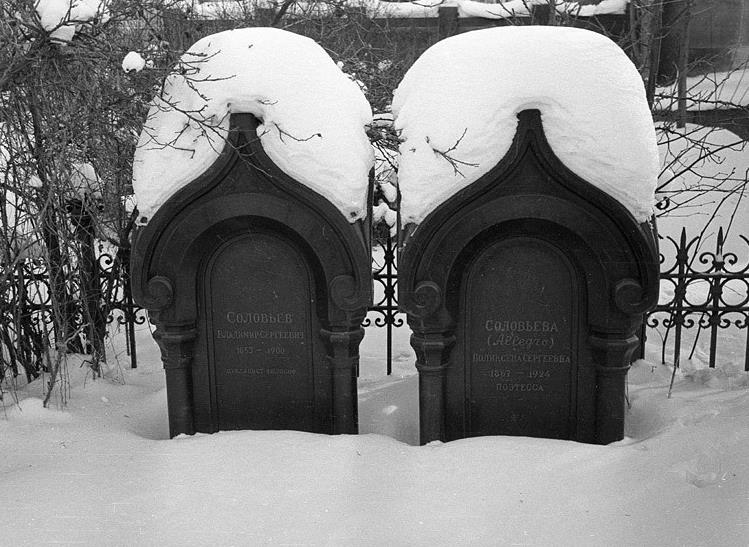

Professeur Jean Halperin

On ne peut pas suffisamment souligner la place du Judaïsme dans la pensée et l'œuvre de Vladimir Soloviev. Dans l'ensemble de sa bibliographie, c'est un thème constant, à la fois visible et en coulisses, un leitmotiv au sens propre et au sens figuré du terme (1).
S'il est vrai que sa réflexion sur les grands sujets peut changer ou se développer, l'attention qu'il porte aux enseignements du Judaïsme est tout à fait constante. Son "écoute d'Israël" doit être comprise dans un sens littéral; ce n'est pas seulement une façon de parler. On peut dire que sur le plan religieux et philosophique – ou, plus précisément, existentiel – Soloviev prenait le Judaïsme au sérieux. Dans son cas, c'était presque une obsession. L'ensemble de son œuvre démontre sa remarquable connaissance des sources hébraïques et juives, y compris les sources post-bibliques. A défaut d'un exposé complet, je voudrais attirer l'attention sur certaines idées remarquables qui, à mon avis, faisaient partie intégrante de la vision intellectuelle et spirituelle de Soloviev et qui sont d'une pertinence remarquable aujourd'hui.
Vie et personnalité
Quelques dates peuvent nous servir d'illustration et de référence: né en 1853, Soloviev découvre Spinoza en 1869, alors qu'il n'a que seize ans. Il a étudié la Kabbale au British Museum en 1875-76.
En 1884, à l'âge de trente et un ans, il commence avec enthousiasme à étudier la langue hébraïque sous la direction de Feivel Goetz, un "jeune talmudiste" (2). Son essai "Judaïsme et question chrétienne "(3) est publié en août-septembre de la même année. En mai 1890, il participe activement à une campagne contre l'antisémitisme.
Quelques mois seulement avant sa mort, le 31 juillet 1900, il décide de faire une traduction annotée de la Bible hébraïque. C'est l'un des projets auxquels il est le plus attaché à l'époque, tout comme celui de faire un voyage en Terre d'Israël. Le 18 juillet, couché sur son lit de mort, il s'adresse à son entourage: « Ne me laissez pas m'endormir. Laissez-moi prier pour le Peuple juif.... Je dois prier pour eux », et il a commencé à réciter les Psaumes d’une voix forte en hébreu (4). Selon un témoin (5) il est mort en récitant en hébreu la profession de foi biblique, Shema Yisrael – « Écoute, Israël, le Seigneur est notre Dieu, le Seigneur est Un » –
[Le verset du Shema Israël, ponctué, cantilé et magnifié selon les règles de la Massorah. Les lettres Ayin et Dalet, plus grandes que les autres caractères, forment le mot 'Ed (« témoin »)]
Ma mère se souvenait très bien de l'enthousiasme fervent avec lequel Soloviev participait au repas pascal (seder) dans la maison de son grand-père, le baron Horace de Gunzburg. Au cours du repas, il lisait le texte du récit de la rédemption de l'esclavage en Égypte (la Haggadah de Pâque) dans le texte original hébreu.
En ce qui concerne le Judaïsme et la pensée juive, Soloviev est exemplaire par l'attention qu'il leur porte et la rigueur de sa lecture des sources. A tel point que N. Bakst a déclaré après sa mort que Soloviev constituait un défi pour les Juifs eux-mêmes parce qu'il connaissait et comprenait le Judaïsme infiniment mieux que beaucoup d'entre eux (6). Bien entendu, cela ne l'empêchait pas d'avoir, en tant qu'homme de son temps, certains préjugés sur le pouvoir des Juifs, le rôle joué par leur argent et leur matérialisme. Peut-être avait-il aussi tendance à surestimer leur importance en Russie et en Pologne et le rôle qu'ils ont joué dans l'urbanisation, l'industrialisation et la construction des chemins de fer.
Un autre témoignage intéressant est celui d'Aaron Steinberg. Il a déclaré que Léon Platonovitch Karsavin avait non seulement une ressemblance physique avec Soloviev (mêmes cheveux, mêmes manières), mais qu'il avait fait une "rencontre" similaire avec le Judaïsme. Steinberg se souvient d'une chose que Karsavin lui avait dite un jour:
« Je vous envie beaucoup. Je sais que ce n'est pas bien, mais je ne peux pas le cacher. Pensez-y: il est si facile pour vous d'ouvrir l'Ancien Testament et de le lire dans sa version originale. Pour vous, c'est un livre à lire. Oui, je lis facilement le grec, bien que les Évangiles soient plus proches de moi dans leur forme slave. Mais, pour lire l'Ancien Testament en version originale! Lequel d'entre nous peut le faire? Mais, sans cela, il n'est pas possible de comprendre l'Orthodoxie. Je suis trop vieux pour commencer à apprendre l'alphabet. Vladimir Soloviev a appris l'hébreu et a conseillé à Léon Tolstoï de faire de même. Je ne peux pas suivre ce conseil, mais j'ai besoin de cette langue; j'ai besoin de quelqu'un qui connaisse cette langue. Vous êtes ma langue » (7).
Dans le même livre, on trouve le souvenir de Steinberg d'une commémoration du vingtième anniversaire de la mort de Soloviev (8). Elle a pris la forme d'une soirée avec Ernest Radlow, présidée par Alexander Blokh.
Un philosophe comme Socrate, un journaliste, un poète et un théologien, Soloviev s'est exprimé avant tout comme un croyant, et c'est à ce titre qu'il a exigé la "conversion" du Christianisme à ses sources hébraïques. Radlow a donné une description éloquente de ses qualités:
« Pureté d'âme, désintéressement, désir d'aider son entourage et les persécutés (par exemple, les Juifs), délicatesse, capacité à comprendre l'âme des autres, courtoisie ».
On pourrait ajouter à cette liste la rigoureuse fermeté avec laquelle il a défendu ses convictions et l'intensité exigeante de son sens des responsabilités, ancré à la fois dans son patriotisme et son humanité. Il a voulu redonner au patriotisme sa véritable signification, qui n'est pas la haine des étrangers et des autres religions mais une bienveillance active au nom de son peuple.
Il considère que la dignité humaine est la valeur première et la seule capable de combattre le mal. Pour Soloviev, ce sont les prophètes d'Israël qui ont le mieux compris qu'un patriotisme authentique mène à l'universalisme.
La question chrétienne
Tout d'abord, il faut se pencher sur son essai, "Le Judaïsme et la question chrétienne" – un ouvrage qui, à certains égards, est déconcertant (9). Dans cet essai, Soloviev s'est basé sur deux hypothèses.
L'une est:
Les relations mutuelles entre le Judaïsme et le Christianisme, pendant les nombreux siècles de leur vie commune, ont eu un caractère remarquable. Partout et toujours, les Juifs ont considéré le christianisme et ont agi envers lui selon les préceptes de leur religion, de leur foi, de leur loi. Dans leur comportement envers nous, les Juifs ont toujours adopté une attitude juive, alors que nous, les chrétiens, au contraire, n'avons jamais appris à nous comporter envers le Judaïsme de manière chrétienne. En ce qui nous concerne, ils n'ont jamais enfreint leur loi religieuse, mais en ce qui les concerne, nous avons enfreint et continuons à enfreindre les commandements de la religion chrétienne (10).
L'autre hypothèse:
Si l'influence des principes chrétiens avait été plus forte dans la vie privée des chrétiens, dans la vie sociale des nations chrétiennes et dans les relations politiques entre chrétiens, alors la vision juive du christianisme aurait été plus clairement démentie et la conversion des Juifs aurait été plus qu’une possibilité et se serait rapprochée. Ainsi, la question juive est une question chrétienne (11).
Entre ces deux postulats, Soloviev ne cachait ni son admiration pour ce qu'il appelait « les meilleures forces du Judaïsme » (12) et sa foi sincère, ni son profond désir en tant que chrétien orthodoxe d'une « unité du Judaïsme et du Christianisme, non pas sur la base de l'indifférence ou de quelques principes abstraits, mais sur la base réelle d'une affinité naturelle et spirituelle et d'intérêts religieux positifs » (13).
D'ailleurs, dans sa quête, Soloviev l'a reconnu:
« Le vrai Dieu, qui a élu Israël et a été choisi par lui, c’est le Dieu fort, le Dieu vivant, le Dieu saint. Le Dieu fort se choisit un homme fort, qui peut lutter avec Lui; le Dieu vivant ne se révèle qu'à une personne consciente d'elle-même; le Dieu saint ne s'unit qu'avec un homme qui recherche la sainteté et soit capable d’une action morale active…
Il est donc clair que cette religion vraie que nous rencontrons chez le peuple d’Israël n'exclut pas, mais au contraire exige le développement d'une personnalité humaine libre, exige une conscience de soi et une activité personnelles. Israël était grand par la foi, mais pour avoir une grande foi, il faut posséder en soi- même de grandes forces spirituelles…
L’être croyant n'attend pas passivement les manifestations des objets extérieurs, mais il va courageusement à leur rencontre; il ne se trouve pas à la remorque des phénomènes, comme un esclave, mais les prévient [anticipe] – il est libre et autonome dans ses actes » (14).
Soloviev était préoccupé par la propension des Juifs au formalisme, ce qui pouvait les rendre "peu attrayants", bien qu'il ne puisse justifier la haine ou la persécution. En même temps, il discernait dans le Judaïsme une appréciation solide de la réalité matérielle, dont d'autres pourraient tirer des enseignements.
« Ne séparant pas l'esprit de son expression matérielle, la pensée juive, de ce fait même, ne sépare pas la matière de son principe spirituel et divin; elle ne reconnaît pas la matière en soi, ne donne pas de signification à l’existence de la matière en tant que telle. Les Israélites n'étaient ni les serviteurs, ni les adorateurs de la matière.
D'autre part, étant éloignés du spiritualisme abstrait, les Israélites ne pouvaient se conduire à l’égard de la matière avec de l’indifférence ou de l’éloignement, et moins encore avec cette haine que lui vouait le dualisme oriental. Ils ne voyaient dans la nature matérielle ni le diable, ni la Divinité, mais seulement la demeure inachevée de l'esprit divino-humain.
Tandis que les matérialismes pratique et théorique se soumettent au fait matériel comme à une loi; tandis que le dualiste se détourne de la matière comme du mal, le matérialisme religieux des Israélites les obligeait à accorder la plus grande attention à la nature matérielle, non point pour la servir, mais pour servir, en elle et à travers elle, le Dieu Très-Haut. Ils devaient séparer en elle le pur de l'impur, le sacré du profane, afin de la rendre digne de devenir le temple de l'Être Suprême.
L’idée de la sainte corporalité, et le souci de la réalisation de cette idée occupent dans la vie d'Israël une place incomparablement plus grande que dans celle de toute autre nation.
C’est à cela que se rattache une partie importante de la législation de Moïse sur la distinction du pur et de l'impur et sur les lois de purification. On peut dire que toute l'histoire religieuse des Israélites était dirigée vers la préparation, pour le Dieu d'Israël, non seulement d’âmes saintes, mais aussi de corps saints » (15).
Un tel matérialisme, a-t-il soutenu, ne présentait aucun danger tant qu'il s'inscrivait dans le cadre de deux autres qualités fondamentales du Judaïsme: l'affirmation de la conscience de l'existence de Dieu et un fort sentiment d'identité personnelle.
Cela l'amena à la conclusion:
« Il est clair maintenant que ce matérialisme religieux des Israélites n’est nullement contradictoire, mais au contraire nettement complémentaire des deux principales qualités de ce peuple: sa puissante religiosité et sa grande énergie de conscience et d’activité humaines.
L'Israélite croyant désire que l'objet de sa foi possède toute la plénitude de l'efficacité et puisse se réaliser jusqu’à l'accomplissement; de leur côté, l'énergie et l'activité de l'esprit humain ne peuvent se contenter de la nature abstraite des idées et des idéaux; elles exigent leur incarnation dans la réalité, et, que le principe spirituel puisse dominer la réalité matérielle [et les circonstances matérielles] jusqu'à ce que l'accomplissement ait lieu; mais cela suppose que la matière elle-même est capable d'une telle spiritualisation; cela suppose un corps spirituel et saint.
Le matérialisme religieux des Israélites ne découle pas de l'incroyance, mais de l’abondance de la foi, assoiffée de son accomplissement; il ne découle pas de la faiblesse de l'esprit humain, mais de la force de son énergie, qui ne craint pas de se souiller à la matière, mais qui la purifie et se sert d’elle pour réaliser son but.
Ainsi donc, l'action réciproque des trois principales qualités du peuple israélite correspondait directement à la haute signification de ce peuple et facilitait l'accomplissement dans son sein, de l'œuvre de Dieu.
Croyant fermement au Dieu vivant, Israël a attiré vers lui la manifestation de Dieu et Sa révélation; croyant également en lui-même, Israël pouvait entrer dans une relation personnelle avec YHWH, se placer face à face avec Lui, conclure un pacte avec Lui et Le servir, non pas comme un instrument passif, mais comme un allié actif; enfin, dans la force même de cette foi active, aspirant à la réalisation finale de son principe spirituel, par la purification de la nature matérielle, Israël a préparé dans son sein une demeure pure et sainte pour l'incarnation du Dieu-Verbe » (16).
Après avoir jeté un regard désapprobateur sur l'histoire de la Russie, de l'Orthodoxie et de Byzance, Soloviev s'est également montré sévère – du moins dans ce livre – envers le Protestantisme, notamment en ce qui concerne son attitude à l'égard de la Bible:
« Le point de départ de l'enseignement, pour le Judaïsme et le Protestantisme, était exactement le même: la Bible; les uns et les autre furent des docteurs de la loi, qui se comportèrent d’une manière tout à fait différente par rapport à leur livre. Les rabbins juifs voyaient dans le livre la loi avant tout – c'est-à-dire la règle de vie – et dirigeaient tous leurs efforts pour consolider cette loi de vie en érigeant une barrière impénétrable de traditions et de commentaires.
Une telle attitude à l’égard du livre sacré découlait du caractère national des Israélites, mais le génie national des Germains s’est comporté tout autrement envers la Bible.
Pour l’enseignement germano-protestant, la Bible est vite devenue moins une règle de la vie que l’objet d’un enseignement théorique. Tenant compte le moins possible de la barrière pratique de la tradition, il s’est instamment efforcé, au contraire, d’exclure tous les éléments traditionnels de la connaissance [compréhension] de la Parole de Dieu.
L'étude protestante de la Bible s'est transformée en critique, et la critique s'est transformée en réfutation. De nos jours, la Bible n'est plus l’appui de la foi pour les maîtres éminents du Protestantisme, mais seulement l'objet d'une critique négative; et s'ils continuent à lui accorder une signification exceptionnelle et à s'en occuper plus que d’autres choses, ce n'est plus qu’une affaire d’habitude.
Le commandement, dans le monde protestant, est d'abord passé des prophètes aux docteurs, et maintenant l'enseignement religieux, à son tour, cède la place à une science scolaire, de préférence à caractère anti- chrétien.
Il ne reste plus ici aucune trace de cette idée théocratique originale, quoique fausse, qui animait les premiers chefs du protestantisme. Les actuels destructeurs des textes bibliques n'ont plus rien à dire au monde et nul but où le conduire » (17).
Soloviev a également appelé le christianisme, s'il ne s'était pas abandonné à l'inaction, à démontrer sa force morale au monde entier et à justifier ses prétentions à être une religion de paix et d'amour (18). Après avoir cité le rôle des Juifs dans les classes commerciales urbaines de "l’Ouest russe" (c'est-à-dire la "Zone de Résidence" et la Pologne), il a expliqué:
« Le malheur n'est pas dans les Juifs, ni dans l'argent, mais dans la domination, la suprématie de l'argent, et celle-ci n'est pas créée par les Juifs; ce ne sont pas les Juifs qui ont assigné comme un but, à toute activité économique, le profit et l’enrichissement; ce ne sont pas les Juifs qui ont séparé le domaine économique du domaine moral et religieux. C'est l'Europe éclairée qui a introduit dans l’économie sociale des principes athées et inhumains, et qui reproche ensuite aux Juifs de suivre ces principes-là » (19).
Enfin, Soloviev rêvait d'une nouvelle société où l'activité économique aurait pour but « l'humanisation de la vie matérielle et de la nature, leur soumission à la raison humaine, afin de les animer par le sentiment humain ».
Il a conclu:
« Et quel peuple serait mieux adapté et plus prédestiné à cette orientation de la nature matérielle que les Juifs qui, dès le début, lui ont accordé le droit d'exister mais ne se sont pas soumis à sa force aveugle, voyant sa forme purifiée comme l'enveloppe immaculée et sainte de l'existence divine?
Ainsi, le futur Israël peut servir d'intermédiaire actif pour l'humanisation de la nature et de la vie matérielle, pour la création d'une nouvelle terre dans laquelle la vérité peut habiter » (20).
Cette idée a été réaffirmée avec force dans "La justification du Bien" (1894-1896) p. 383. Il y souligne entre autres que « la majorité des pharisiens n'a pas participé aux accusations portées contre Jésus » (ibid., p. 315).
Thèmes dominants dans la pensée de Soloviev
Plusieurs thèmes dominants apparaissent dans les écrits de Soloviev. Tout d'abord, il n'a cessé de dire aux chrétiens qu'on ne pouvait pas s'attendre à ce que les Juifs tolèrent le monde chrétien comme s'il était déjà vraiment chrétien.
On ne pouvait pas leur demander de pardonner et d'oublier tout le mal qu'ils avaient subi dans le monde chrétien. Pour la majorité des Juifs, il était moralement et psychologiquement impossible de le faire tant que l'attitude indigne du monde chrétien à leur égard continuait d'exister.
Plus explicitement encore, il a déclaré que les Juifs ne pouvaient voir dans le monde chrétien que ce que ceux qui se disaient chrétiens leur montraient, et qu'il était ridicule d'attendre des Juifs, en masse et par conviction religieuse, qu'ils se convertissent au christianisme en tant que religion d'amour au milieu des clameurs de pogroms anti-juifs et des cris "chrétiens" de « Mort aux Juifs! À bas les Juifs! ».
Sur ce point, on peut dire que la position de Soloviev ressemble à celle d'autres écrivains russes comme Léon Tolstoï, M. Stassulevich, Maxim Gorky, Léonid Andreïev, Fedor Sologoub, Paul Miliukov, F. Rodichev et Vladimir Korolenko.
Un deuxième thème est la réfutation des fausses représentations du Judaïsme, comme en témoigne sa critique de "La Modernité des Prophètes", un article d'Ernest Havet (auteur de "Le Christianisme et ses origines") paru dans la Revue des Deux Mondes à Paris en 1891. Soloviev pointe l’ignorance de l'hébreu chez l'écrivain, la superficialité et la naïveté qui l'ont conduit à dire que l'hébreu était une langue déjà morte à l'époque des Hasmonéens, et que les prophètes étaient des journalistes qui vivaient dans les premiers siècles de l'ère chrétienne.
Comme l'a dit Soloviev:
« C'est comme si l'on affirmait qu'il n'y avait jamais eu de littérature latine ancienne, et que ce que l'on sait des Odes d'Horace et des poèmes de Virgile, des discours de Cicéron ou des Annales de Tacite avait été écrit par des moines inconnus à l'époque des successeurs de Charlemagne ou pendant les Croisades, et que l'on faisait cette affirmation sans connaître le latin et en n'ayant accès à ces œuvres que dans une traduction française ».
Cette clarification illustre bien les absurdités et les distorsions auxquelles peut conduire une réinterprétation révisionniste ou négationniste de l'histoire. Soloviev s'est à nouveau exprimé avec la même ironie abrasive dans un article intitulé "Le Talmud et la littérature polémique la plus récente sur le sujet en Autriche et en Allemagne":
« Il n'est pas rare de le lire ou de l'entendre dire: "La question juive pourrait être facilement réglée, on pourrait accepter complètement les Juifs et leur accorder des droits civiques et sociaux égaux, si seulement ils renonçaient au Talmud qui encourage leur fanatisme et leur singularité, et s'ils revenaient à la pure religion de la loi de Moïse telle que la pratiquent les Karaïtes, par exemple…" C'est comme si dans un pays où les orthodoxes n'étaient pas bien considérés – en Autriche, par exemple – on avait dit ou écrit: Nous sommes prêts à accepter les orthodoxes et à ne pas restreindre leurs droits, mais ils doivent renoncer catégoriquement à leurs règles et coutumes liturgiques, à leur vieille absurdité appelée "enseignement des Pères de l'Église" et, enfin, à leurs monuments de superstition et de fanatisme que sont "Les vies des saints"; s'ils reviennent au pur enseignement des Évangiles tel qu'il est pratiqué, par exemple, par les frères Mozav ou la secte Molokan » (21).
Dans ce contexte, Soloviev a rappelé la « règle fondamentale de la morale judéo-chrétienne »: « Faites aux autres ce que vous voudriez qu'ils vous fassent », et il a ajouté que « le Judaïsme représente l'axe même de l'histoire universelle ».
Non seulement Soloviev a constamment insisté sur la valeur éthique des enseignements du Talmud et de l'affirmation de la responsabilité de l'individu, dont il a fait le principe directeur de la vie en société.
Mais il a également condamné les manœuvres antisémites diffamatoires auxquelles peut donner lieu une présentation déformée de la littérature rabbinique.
C'est avec une indignation profonde qu'il a condamné, par exemple, le tissu de non-sens et de falsification mis en avant par S. Diminsky dans un rapport pseudo-scientifique préparé pour une commission de Minsk sur la question juive. Soloviev a écrit que ce pamphlet ne méritait l'attention que dans la mesure où l'arrogance malveillante de son auteur était révélatrice du niveau culturel du public auquel il s'adressait (22).
Un troisième thème était son appréciation de la Kabbale. Il a révélé un article sur la Kabbale paru dans le Brockhaus and Efron Encyclopedic Dictionary, et qui a été écrit à l'origine comme une préface à l'essai de David de Gunzburg, "La Kabbale, la philosophie mystique des Juifs" (23). Dans cet article, Soloviev décrit la Kabbale comme un immense arbre, qui s'étend sur plus de mille ans et remonte aux débuts de la pensée juive et judéo-chaldéenne. Ses enseignements présentaient certaines similitudes avec les concepts gnostiques et néoplatoniciens.
La Kabbale, dit-il, n'est le produit ni de la pensée médiévale ni de la pensée alexandrine. Elle est la négation du dualisme. Pour la Kabbale, le monde matériel n'est que l'étape finale et ultime de la réalisation de ce qui existe vraiment, l'accomplissement de la vérité au point où elle atteint la finalité et la plénitude de l'être, sur le modèle de l'échelle de Jacob, sur laquelle les puissances célestes montent et descendent.
Pour Soloviev, cette conception était fondamentalement différente de celle de la philosophie grecque, car elle mettait l'accent sur l'idée de l'homme comme forme absolue et universelle, que Soloviev considérait comme une vérité biblique authentique transmise au christianisme par l'apôtre Paul.
Il considérait la tradition mystique des nombres, des lettres et des noms comme un élément subsidiaire inséparable des principales idées anthropomorphiques.

Quatrièmement, la proximité de l'analyse de Soloviev sur la prière, la charité et le jeûne avec la piété juive fondamentale est très frappante. Dans une étude sur "Les fondements spirituels de la vie " (24), Soloviev a écrit d'une manière qui fait écho à la liturgie juive pour Rosh Ha-Shanah et Yom Kippour, selon laquelle « la repentance, la prière et la charité » peuvent éviter un jugement divin sévère.
« La prière, la charité et le jeûne sont les trois actes fondamentaux de la vie intérieure, les trois bases de la religion intérieure. L'homme qui ne prie pas Dieu ne peut pas aider les hommes et ne peut pas corriger sa nature en faisant un effort qui le concerne lui-même; il reste étranger à la religion, bien qu'il puisse penser, parler et écrire sur des sujets religieux toute sa vie. Ces trois activités religieuses fondamentales sont tellement imbriquées que l'une n'a pas de sens sans l'autre ».
Cinquièmement, l'importance que Soloviev attribue à la "théocratie nationale et à la loi de Moïse" dans son ouvrage "L'histoire et l'avenir de la théocratie" (1885-87) (25). A cette fin, il cite abondamment les sources hébraïques (pp. 414-635). Il en va de même pour son ouvrage "La justification du Bien" (1894-1896) (26).
On a ici une extension des idées déjà exprimées par Soloviev dans ses "Leçons sur la divino-humanité" (1877- 78) (27), écrites alors qu'il n'avait que vingt-cinq ans.
C'est ce qu'il a dit du Dieu vivant:
« Lorsque Moïse, dans la Bible, a demandé à Dieu quel était Son Nom, on lui a répondu Ehyeh asher ehyeh, ce qui signifie, littéralement, "Je serai qui Je serai"... Si, dans le bouddhisme indien, le principe divin est défini négativement comme un nirvana ou un néant, et si dans l'idéalisme grec, il est défini objectivement comme toute idée ou essence universelle, dans le monothéisme juif, il est défini subjectivement comme étant le pur Je-Moi ou la Personnalité absolue. C'était la première manifestation personnelle et individuelle du principe divin » (28).
Après avoir souligné que le principe essentiel du Judaïsme – la révélation de Dieu dans Son unité inconditionnelle comme un "Je" absolu – a été confirmé par les prophètes, il a poursuivi:
« Les prophètes Juifs étaient en même temps de grands patriotes, qui se sont imprégnés de l'idée nationale du Judaïsme. Mais c'est précisément parce qu'ils étaient imprégnés de cette idée qu'ils ont dû se rendre compte qu'elle était universelle et destinée à tous, qu'elle était suffisamment vaste et énorme pour embrasser l'humanité et le monde entier. De ce point de vue, l'exemple des prophètes Juifs – qui étaient de grands patriotes en même temps que de grands représentants de l'universalisme – est particulièrement instructif, car il nous montre que si le vrai patriotisme doit nécessairement être libéré de tout égoïsme et de toute exclusivité nationale, la conception pan-humaine ou l'universalisme authentique, pour avoir une valeur et une force réelles, doit en même temps, par sa nature même, être un élargissement ou une universalisation d'une idée nationale positive et non un cosmopolitisme vide et indifférent » (29).
Soloviev a fait ressortir très clairement le caractère spécifique des prophètes hébreux:
« Comme les prophètes étaient des hommes d'action inspirés, dotés d'un esprit pratique au sens le plus élevé du terme, et des penseurs non spéculatifs, l'idée synthétique d'un Être divin était davantage perçue par leur sens spirituel et éveillait plutôt leur volonté morale, qu’elle n’était l'objet d'un processus intellectuel » (30).
Il n'est guère exagéré de dire que Soloviev affirmait que l'exemple des prophètes d'Israël montrait que l'universel est atteint par le particulier.
Un sixième thème a été abordé ci-dessus: Soloviev a volontiers utilisé sa capacité à lire des sources juives, tant post-bibliques que bibliques, en hébreu original. A titre d’exemple, son explication de la nature de l'altruisme, basée sur ces sources. Il a cité à la fois la formulation doublement négative de l'altruisme – « Ne fais pas aux autres ce que tu ne voudrais pas qu'ils te fassent » – et la formulation positive: « Faites aux autres ce que vous voudriez qu'ils vous fassent ».
La première de ces formulations, affirmait-il, était le commandement de la justice, et la seconde celui de la miséricorde (31). L'un ne peut exister sans l'autre, comme le montre la terminologie hébraïque de tzedek et tzedakah, qui signifient simultanément justice et charité.
Cette association indissociable des deux règles de l'altruisme est d'une importance essentielle, car elle est le fondement de l'unité interne de la jurisprudence, de l'éthique, de la politique et de la vie spirituelle de la société (32).
Parlant de la responsabilité de l'humanité envers la création et la nature selon l'Écriture, Soloviev cite la phrase hébraïque de Genèse (3:23): la’avod et ha-adamah. Il ajoute dans une note de bas de page: « Cela signifie littéralement "servir la terre" – servir évidemment non pas dans le sens d'un culte religieux (même si le verbe avod peut également transmettre cette signification) mais dans le même sens que les Anges servent l'humanité ou que l'éducateur est au service des enfants qu'il ou elle enseigne » (33). Je suis frappé par la proximité, ici aussi, de sa façon de penser avec celle de Rabbi Abraham Isaac Hacohen Kook (34).
En se basant sur les sources bibliques, Soloviev a également analysé correctement les implications du commandement d'aimer son prochain et le sens que la foi juive donne à l'idée d'assomption de la sainteté. Il explique cette dernière par une métaphore originale: la sainteté ne signifie la séparation que dans le sens où la tête est séparée du corps, c'est-à-dire:
« comme la partie principale qui ne peut exister – elle-même et en tant que telle – séparée du corps dans son ensemble, tout comme le corps dans son ensemble, à un certain stade de son développement, ne peut exister sans sa partie principale » (35).
De même, Soloviev est souvent revenu sur le thème de la signification de l'élection du Peuple juif par Dieu et de l'élection de Dieu par le Peuple juif (36). C'est une autre façon de dire qu'il a pris au sérieux le message de Dieu à Abraham: « En toi seront bénies toutes les familles de la terre ».

« Amen, amen, Je vous le dis: si le grain de blé tombé en terre ne meurt pas, il reste seul; mais s’il meurt, il porte beaucoup de fruit ».
Évangile selon saint Jean (12, 24)
En tout cas, l'"écoute d'Israël" constante et attentive de Soloviev n'était pas seulement émouvante, ni purement académique. Elle possède une actualité singulière. D'une certaine manière, je suis tenté de dire que Vladimir Soloviev nous parle aujourd'hui, ainsi qu'au peuple russe et au peuple chrétien, en les confrontant à leurs responsabilités (37).
IMMANUEL 26/27 - 1994
Notes:
1. Sauf indication contraire, toutes les références aux écrits de Soloviev renvoient à l'édition monumentale de ses œuvres complètes en russe, éditée en douze volumes par M. Soloviev et E. L. Radlow, Sobranie sochinenii V. S. Solovieva (nouvelle édition, Bruxelles, 1966). Les références aux "œuvres de Soloviev" se rapportent à cette édition. Plusieurs de ses écrits sont particulièrement pertinents pour notre sujet. Dans le volume 3: Dukhovnyia osnovy zhizni ("Les fondements spirituels de la vie", 1882-84). Dans le Tome 4: Evreistvo i khristianskii vopros ("Le Judaïsme et la question chrétienne", 1884), pp. 135-185; Istoria i budushtnost theokratii ("L'histoire et l'avenir de la théocratie", 1885-87), pp. 234-642, et en particulier le livre III, "Natsionalnaia theokratia i zakon Moiseev" ("La théocratie nationale et la Loi de Moïse"), pp. 414-488. Dans le Tome 6: Evrei, ikh verouchenie i nravouchenie ("Les Juifs, leurs enseignements religieux et moraux", 1891), pp. 374-380-; Talmudi noveishaia literatura o niem v Avstrii i Germanii ("Le Talmud et la littérature polémique la plus récente sur le sujet en Autriche et en Allemagne", 1886), pp. 3-32; Novozavetniy Izrail ("Newtestamental Israel", 1885), pp. 207- 221. Dans le Tome 7: Kogda zhili evreiskie proroki? ("Quand les prophètes juifs ont-ils vécu?" 1896; une revue critique de l'article d'Ernest Havet, "La Modernite des prophetes", Paris, 1891), pp. 180-200. Dans le Tome 8: Pravo i nravstvennost ("Justice et morale", 1897), pp. 521-658, et particulièrement pp. 577-578; Opravdaniedobra ("La justification du Bien", 1894-96-), pp. 3-516, et particulièrement p. 102 sur la relation entre tzedek et tzedakah (justice et charité). Dans le volume 9: Poniatie o Boge: v zashchitu filosofii Spinozy ("La notion de Dieu: à la défense de la philosophie de Spinoza", 1897), pp. 3-29. Dans le volume 10: TriRazgovora ("Trois discussions", 1899-1900-), pp. 84-221. Dans le Tome 11: Lettre à Nicolas II sur la liberté religieuse, 1896-97, pp. 452-456. Dans le Tome 12: le poème "Emmanuel", p. 33, et la Kabbale, mistisheskaya filosofia evreev ("La Kabbale, philosophie mystique des Juifs", 1896), pp. 322-334.
2. Serge M. Solowiew, Vie de Wladimir Soloiview par son neveu (Paris: Editions S. O. S., 1982), pp. 257 et suivantes.
3. Evreistvo i khristianskii vopros, publié d'abord dans Pravoslavnoie obozrenie, 1884, nos 8-9, puis sous forme de livre (Moscou, 1884); Œuvres de Soloviev, vol. 4, pp. 135-185. Ce texte a été récemment publié en français avec une préface d'Alain Besangon (Paris: Desclee, 1992), 189 pages. Une traduction antérieure en allemand est Das Judentum und die christliche Frage 1884 (Wuppertal- Barmen: Jugenddienst-Verlag, 1961), 32 pages; dans cette version, cependant, certaines parties de l'original semblent avoir été omises en silence.
4. Serge M. Solowiew, op.cit., p. 469.
5. Henri Sliosberg, Baron Horace de Gunzburg: sa vie, son œuvre (Paris, 1933), p. 57.
6. Discours prononcé le 12 novembre 1900 sous les auspices de la Société pour la diffusion de l'éducation parmi les Juifs, Knizhnii voskhod. Cf. également F. Goetz, Soloviev i evrei ("Soloviev et les Juifs"; Moscou, 1902); V. Korolenko, La Lutte de Soloviev contre le vantisémitisme ("La lutte de Soloviev contre l'antisémitisme"; Moscou, 1909), et P. Berlin, "Soloviev i evrei" ("Soloviev et les Juifs"), Journal Novyi, 1962, pp. 223-235.
7. Aaron Steinberg, Druzia moykh rannikh let (1911-1928) ("Les amis de mes premières années"; Paris: Syntaxis, 1992), p. 199. Cf. ses essais et études sélectionnés, L'histoire comme expérience: Aspects of Historical Thought - Universal and Jewish (New York: Ktav, 1983), p. 385; et dans ce volume, Uriel Tal, "Introduction: On the Thought of Aaron Steinberg", pp. 7-31, en particulier pp. 15 et 30.
8. Ibid., pp. 79-80.
9. Voir la note 3 ci-dessus. Pour les citations suivantes, des références seront données aux œuvres de Soloviev, à la traduction française récente et (lorsqu'elle est disponible) à la traduction allemande antérieure.
10. Russe, p. 136; français, pp. 55-56-; allemand, p. 5.
11. Russe, p. 159, français, p. 104-105; allemand, p. 26. Souligné par l'auteur.
12. Russe, p. 142; français, p. 62.
13. Russe, p. 139; français, p. 66; allemand, p. 8.
14. Russe, p. 145; français, p. 76-77; allemand, p. 15.
15. Russe, p. 149; français, pp. 82-83-; allemand, pp. 18-19. Sur le "matérialisme religieux" des Juifs, cf. aussi quelques réflexions importantes dans Istoria ibudushtnost theokratii ("L'histoire et l'avenir de la théocratie", 1885-87), les œuvres de Soloviev, Tome 4, p. 440.
16. Russe, pp. 149- 150; français, pp. 84-85; allemand, p. 19. Dans cette affaire comme dans d'autres, il y a une ressemblance frappante entre les idées de Soloviev et la pensée du rabbin Abraham Isaac Hacohen Kook (1865- 1935), l'un des plus grands penseurs juifs de notre temps qui devint le premier grand rabbin ashkénaze de la Terre d'Israël sous le mandat britannique. Voir également Mikhail Agursky, "Universalist Trends in Jewish Religious Thought,״ Immanuel 18 (automne 1984), pp. 43-53; Rabbin Shmuel Aleksandrov, Mikhtavei mehkar u-vikoret ("Dispatches of Research and Criticism"; Jérusalem, 1932), pp. 3, 6 et 21, qui qualifie Soloviev de "sage" et de "juste".
17. Russe, pp. 170-171; français, pp. 128-129.
18. Russe, p. 182; français, p. 150.
19- Russe, p. 184; français, p. 152; allemand, p. 30.
20. Russe, p. 185; français, pp. 155-156; allemand, p. 32.
21. Russkoye obozrenie, 1886, pp. 3-32-; les œuvres de Soloviev, Tome 6, pp. 3-32.
22. Evrei, ikh verouchenie i nravouchenie: issledovanie S. Ya. Diminskago ("Les Juifs, leur religion et leurs enseignements moraux: A Study by S. Y. Diminsky", 1891), œuvres de Soloviev, Tome 6, pp. 374-380
23. Cet essai, publié à l'initiative de Soloviev, est paru dans Voprosyfilosofii i psychologii, mai-juin 1986, pp. 277-300- 24. Dukshovnyia osnovy zhizni ("Fondations de la vie religieuse"), publié in Pravoslavnoie obozrenie, 1884; œuvres de Soloviev, Tome 3.
25. Istoria i budushtnost theokratii, Œuvres de Soloviev, Tome 4, p. 234-642.
26. Opravdanie dobra, œuvres de Soloviev, Tome 8, pp. 3-516 (traduction anglaise, 1918); spécialement pp. 101-102, 138, 215, 315, 383- 384 et 406.
27. Traduction anglaise, 1948. Voir maintenant la traduction de Bernard Marchadier (Paris: Cerf, 1991).
28. Russe, p. 71; Marchadier, p. 77. Cf. également pp. 74-78; Marchadier, pp. 78-83.
29. Russe, pp. 79-80-; Marchadier, pp. 85-86.
30. Russe, pp. 80-81; Marchadier, p. 86.
31. Ce sont les sources juives post-bibliques qui contiennent de nombreuses discussions sur les deux attributs de Dieu que sont la justice et la miséricorde. Voir E. E. Urbach, The Sages: Their Concepts and Beliefs (Jérusalem: Magnes, 1979), pp. 448-461.
32. Opravdanie dobra ("La justification du Bien", 1894-96), œuvres de Soloviev, Tome 8, pp. 101-102.
33. Ibid., p. 383.
34. Voir la note 16 ci-dessus.
35. Istoria i budushtnost theokratii ("L'histoire et l'avenir de la théocratie", 1885-87), oeuvres de Soloviev, Tome 4, p. 470.
36. Comme ibid., pp. 550-551.
37. D'autres informations et documents utiles sont disponibles dans les études suivantes. Paul Berline, Russian Religious Philosophers and the Jews (New York: Jewish Social Studies, 1947), pp. 271-318. Emanuel Glouberman, Fedor Dostoievsky, Vladimir Soloviev, Vassili Rozanov et Lev Shestov sur les thèmes Juifs et de l'Ancien Testament (Ann Arbor: University of Michigan Press, 1974). David Flusser, "Vladimir Soloviev und unsere Lage", Freiburger Rundbrief 21 (1969), pp. 8-11. Ludwig Wenzler, "Die Freiheit und das Bose nach VladimirSoloviev" (Fribourg et Munich: Alber, 1978). Bernard Dupuy, "Les Juifs, l'histoire et la fin des temps selon Vladimir Soloviev", ISTINA 37 (1992), pp. 253-283; reproduit dans le livre de la Société Vladimir Soloviev, œcuménisme et eschatologie selon Soloviev (Paris: F.-X. de Guibert, 1994), pp. 108-141.